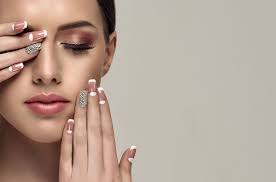

SERVICIOS DE MANICURA
La manicura es una forma asequible de sentirse mejor y más guapa rápidamente.
La manicura es el conjunto de tratamientos y cuidados necesarios, que incluye técnicas de cuidado y embellecimiento, tanto de manos como de uñas. Nuestro equipo de expertos en manicura está listo para cuidar y embellecer tus manos. Ofrecemos una amplia gama de tratamientos de manicura, desde manicuras clásicas hasta técnicas más creativas, como uñas de gel, acrílicas o esmaltado permanente. También ofrecemos servicios de cuidado de cutículas, limado de uñas, exfoliación y masajes para mantener tus manos suaves y saludables. Aquí te explicamos en qué consisten nuestros tratamientos destacados.
Esmaltado semipermanente
El esmaltado semipermanente es un servicio estético para las uñas que ofrece una solución duradera y de larga duración para lucir unas uñas impecables. El esmaltado semipermanente utiliza una fórmula especial de esmalte en gel que se aplica en las uñas naturales y se cura mediante una lámpara LED o UV. Este proceso de curado asegura que el esmalte se adhiera completamente a la uña, lo que resulta en una mayor resistencia y durabilidad en comparación con el esmalte tradicional. Su duración es de 2 a 3 semanas.
Uñas esculpidas
Las uñas esculpidas en gel y acrílico son una técnica popular en el mundo de la estética para lograr uñas largas, fuertes y hermosas. Estos dos materiales, gel y acrílico, se utilizan para construir extensiones de uñas artificiales que se adaptan a la forma y estilo deseados. Las uñas esculpidas en gel ofrecen un aspecto natural y elegante. Se aplica una capa de gel en cada uña y se modela cuidadosamente con la forma y longitud deseadas. Luego, se endurece el gel mediante una lámpara UV o LED, lo que proporciona un acabado resistente y duradero. El gel permite que la luz pase a través de él, lo que da a las uñas un aspecto brillante y transparente. Por otro lado, las uñas esculpidas en acrílico se crean mediante una mezcla de polvo acrílico y líquido monómero. Esta mezcla se aplica sobre la uña natural o sobre una extensión de uña artificial, y se moldea con una brocha para lograr la forma y longitud deseadas. A medida que el acrílico se seca, se vuelve duro y resistente, creando una base sólida para las uñas.